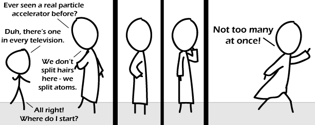

Comic JK 563
When I Feel Like It
⇤
<
?
>
⇥

⇤
<
?
>
⇥
Forum
.
RSS
.
Digg
.
Facebook
.
Reddit
.
Twitter
.
Stumbleupon
Enter your thoughts on number 563 here. Please, no spamming, trolling, or phreaking. Your mother's still trying to sell a CRT from the 1980s for 70% of what she paid. No Daft Punk reference? I am dissapoint. >What is it? >Um, the title of the page is “Do It Faster Makes Us Stronger”. ba dada ba dada ba dada do do do do do do do Do cathode ray tubes even exist any more, or are they all in "recycling" dumps in "developing" nations? > I'm using one right now. Had to dump it down to 47 hertz refresh rate to make the whine inaudible. >> ewwww... I'd rather get a headache from audible whine than from slow-refresh on my visual cortex. >Yeah, some people prefer them. Google. Trinitron. Probably the best CRT's ever made, and a lot of people still use them. I don't, because I like having a desk that doesn't collapse under the weight of my three monitors, but they have more accurate colors and a much longer lifespan than LCD's. In order to get the same level of color accuracy out of an LCD monitor you have to spend A LOT of money. I don't think it's possible to split hairs when no one has any hair... >If you follow that logic, then how do they talk without mouths? >>Telepathy. >>>How are they telepathic with no brains? >>>>Dude, they have brains, you just can't see them. They're invisible. >>>>>And sometimes transparent >>>>>> If they use telepathy, does that make them telepathetic? I get the first panel, but not the other three. What�s the joke? >He's accelerating all the particles in his body when he goes running off. >Split too many atoms at once� boom! >> What the �*$�� is wrong with you? >> Even I got that one, and the only biology / physics / chemistry / etc. I know, are the birds and the bees. >>> if ( sqrt(bird) == bee ) assert( !"fatal: universe is inconsistent" ); >>>> Even I know bird squirts aren't bees!